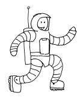
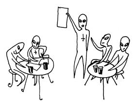

Get Involved!
|
5. COME AND JOIN US AT CAPTION The best thing you can do for us is turn up at the convention, so mark it in your diaries now. The membership form on the back page lists the different memberships, from 'Friend of Caption' to the 'Wage-slave Special'. Joining in advance is cheaper, and gets you more information, but every year people successfully decide to come at the last minute. If you want to turn up in costume -- this might, after all, be your only chance to wear that silver jump-suit this millennium -- go for it. Some people will be in costume, some won't, and some, though they look like they're in costume, actually always dress like that. Follow your inner directives. |
|  |
4. HELP SPREAD THE WORD Is there somewhere near you where you could leave fliers or put up posters for Caption? Do you have any friends you think might fancy coming? Caption, as small conventions often do, gets a lot of its most useful publicity via word of mouth, so if you're going, do let people know. You can get fliers and posters from us, or if you know someone you think would like to know about Caption, you can photocopy any bits of this leaflet or write, phone or email us (details below) and get us to send them one. Updates and more information will also be available on our website; to see the latest progress check out http://caption.org/ |
| shout "3. give us your art to auction" p " Caption will, as usual, be holding a charity auction to raise money to help the Cartoon Art Trust run cartooning courses. If you can provide us with artwork to auction, or donations of any other unusual or interesting items, we'll be absurdly grateful. To reproduce art from the charity auction in Caption's book we need to receive it by August 1st, so please get your pieces in early -- and let Jeremy know they're coming on 01865 721638. Items on a spacey theme are especially welcome this year, but anything and everything goes!" |  |
|
2. SEND US YOUR SPACE DEBRIS We want to exhibit your space-ships, astronauts, planets, comets, and other assorted space-debris in our interstellar exhibition. The membership form has space for a starry doodle from everyone -- I'll be turning the doodles into mobile pieces to hang in the corridors at Caption -- but anyone who wants to do anything more complicated, please let me know (Jeremy on 01865 721638) and then do it. Please be advised that unless you specifically ask otherwise, original artwork may wind up being sold in our charity auction. Speaking of which: |
|
1. BRING ALONG A COMIC TO SELL One of the best things about Caption is the variety and range of small press comics on sale. We'd like you to help us keep it that way by bringing your own work along to sell. The process is simple: just drop off your comics with the Caption Table gofers, let them check details with you, and then go off and enjoy the convention. At the end of the day (6pm) go back to pick up money and left-over comics. When you need comics for freebies or swaps, let the gofer on the table know before you take them. Remember: you have until 21 August to make a comic to sell at Caption. So get scribbling! |
 |
0. HELP US GET CAPTION RIGHT
We want Caption to be useful, interesting and fun for all our
members. If you have any ideas, any workshops or discussion
meetings you'd like to see or could lead, please get in touch. The
best way is by emailing
caption99@alleged.demon.co.uk but you can
also write to Caption, 24 Campbell Road, Oxford, OX4 3PF, or leave
a short message on Jeremy's ansaphone on 01865 721638. We would be
particularly interested to hear from you if you can help us out
with publicity, eg. by publishing articles, placing adverts,
displaying posters, or getting leaflets out to interested
people.